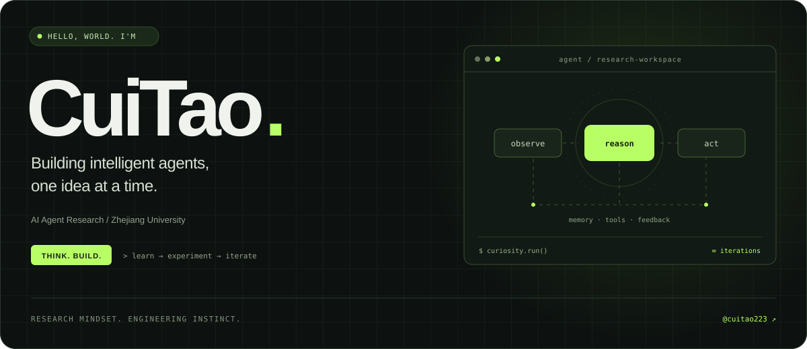

GRADUATE STUDIES
01浙江大学
Zhejiang University
软件工程 · 硕士研究生

我是 CuiTao，目前是浙江大学软件工程硕士研究生，本科就读于中国海洋大学计算机科学与技术专业。研究兴趣聚焦于 AI Agent，喜欢把想法变成可以运行的系统。
Turning ideas into working systems.
Learning through experiments, one iteration at a time.
Zhejiang University
软件工程 · 硕士研究生
Ocean University of China
计算机科学与技术 · 本科
研究项目与学习仓库，记录持续探索的过程。
欢迎交流 AI Agent、研究想法与有趣的工程实践。